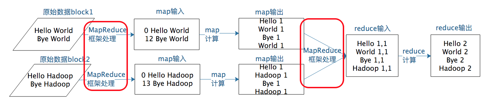
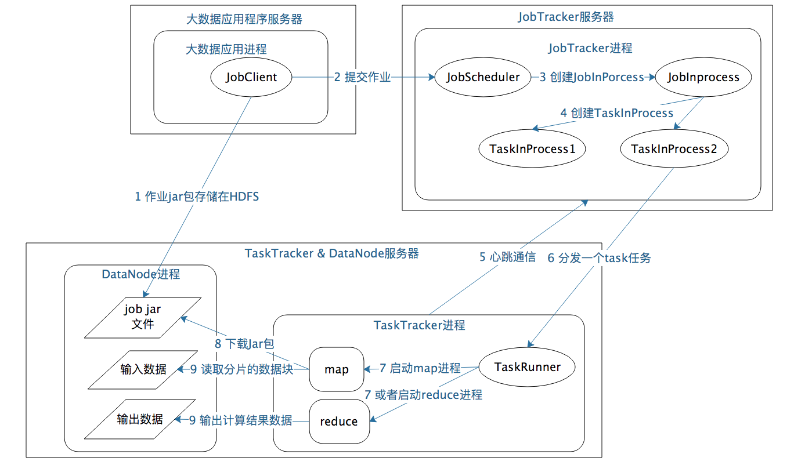

08 | MapReduce如何让数据完成一次旅行
上一期我们聊到 MapReduce 编程模型将大数据计算过程切分为 Map 和 Reduce 两个阶段，先复习一下，在 Map 阶段为每个数据块分配一个 Map 计算任务，然后将所有 map 输出的 Key 进行合并，相同的 Key 及其对应的 Value 发送给同一个 Reduce 任务去处理。通过这两个阶段，工程师只需要遵循 MapReduce 编程模型就可以开发出复杂的大数据计算程序。
那么这个程序是如何在分布式集群中运行起来的呢？MapReduce 程序又是如何找到相应的数据并进行计算的呢？答案就是需要 MapReduce 计算框架来完成。上一期我讲了 MapReduce 既是编程模型又是计算框架，我们聊完编程模型，今天就来讨论 MapReduce 如何让数据完成一次旅行，也就是 MapReduce 计算框架是如何运作的。
首先我想告诉你，在实践中，这个过程有两个关键问题需要处理。
那么这两个关键问题对应在 MapReduce 计算过程的哪些步骤呢？根据我上一期所讲的，我把 MapReduce 计算过程的图又找出来，你可以看到图中标红的两处，这两个关键问题对应的就是图中的两处“MapReduce 框架处理”，具体来说，它们分别是 MapReduce 作业启动和运行，以及 MapReduce 数据合并与连接。

我们以 Hadoop 1 为例，MapReduce 运行过程涉及三类关键进程。
1. 大数据应用进程。这类进程是启动 MapReduce 程序的主入口，主要是指定 Map 和 Reduce 类、输入输出文件路径等，并提交作业给 Hadoop 集群，也就是下面提到的 JobTracker 进程。这是由用户启动的 MapReduce 程序进程，比如我们上期提到的 WordCount 程序。
2.JobTracker 进程。这类进程根据要处理的输入数据量，命令下面提到的 TaskTracker 进程启动相应数量的 Map 和 Reduce 进程任务，并管理整个作业生命周期的任务调度和监控。这是 Hadoop 集群的常驻进程，需要注意的是，JobTracker 进程在整个 Hadoop 集群全局唯一。
3.TaskTracker 进程。这个进程负责启动和管理 Map 进程以及 Reduce 进程。因为需要每个数据块都有对应的 map 函数，TaskTracker 进程通常和 HDFS 的 DataNode 进程启动在同一个服务器。也就是说，Hadoop 集群中绝大多数服务器同时运行 DataNode 进程和 TaskTacker 进程。
JobTracker 进程和 TaskTracker 进程是主从关系，主服务器通常只有一台（或者另有一台备机提供高可用服务，但运行时只有一台服务器对外提供服务，真正起作用的只有一台），从服务器可能有几百上千台，所有的从服务器听从主服务器的控制和调度安排。主服务器负责为应用程序分配服务器资源以及作业执行的调度，而具体的计算操作则在从服务器上完成。
具体来看，MapReduce 的主服务器就是 JobTracker，从服务器就是 TaskTracker。还记得我们讲 HDFS 也是主从架构吗，HDFS 的主服务器是 NameNode，从服务器是 DataNode。后面会讲到的 Yarn、Spark 等也都是这样的架构，这种一主多从的服务器架构也是绝大多数大数据系统的架构方案。
可重复使用的架构方案叫作架构模式，一主多从可谓是大数据领域的最主要的架构模式。主服务器只有一台，掌控全局；从服务器很多台，负责具体的事情。这样很多台服务器可以有效组织起来，对外表现出一个统一又强大的计算能力。
讲到这里，我们对 MapReduce 的启动和运行机制有了一个直观的了解。那具体的作业启动和计算过程到底是怎样的呢？我根据上面所讲的绘制成一张图，你可以从图中一步一步来看，感受一下整个流程。

如果我们把这个计算过程看作一次小小的旅行，这个旅程可以概括如下：
1. 应用进程 JobClient 将用户作业 JAR 包存储在 HDFS 中，将来这些 JAR 包会分发给 Hadoop 集群中的服务器执行 MapReduce 计算。
2. 应用程序提交 job 作业给 JobTracker。
3.JobTacker 根据作业调度策略创建 JobInProcess 树，每个作业都会有一个自己的 JobInProcess 树。
4.JobInProcess 根据输入数据分片数目（通常情况就是数据块的数目）和设置的 Reduce 数目创建相应数量的 TaskInProcess。
5.TaskTracker 进程和 JobTracker 进程进行定时通信。
6. 如果 TaskTracker 有空闲的计算资源（有空闲 CPU 核心），JobTracker 就会给它分配任务。分配任务的时候会根据 TaskTracker 的服务器名字匹配在同一台机器上的数据块计算任务给它，使启动的计算任务正好处理本机上的数据，以实现我们一开始就提到的“移动计算比移动数据更划算”。
7.TaskTracker 收到任务后根据任务类型（是 Map 还是 Reduce）和任务参数（作业 JAR 包路径、输入数据文件路径、要处理的数据在文件中的起始位置和偏移量、数据块多个备份的 DataNode 主机名等），启动相应的 Map 或者 Reduce 进程。
8.Map 或者 Reduce 进程启动后，检查本地是否有要执行任务的 JAR 包文件，如果没有，就去 HDFS 上下载，然后加载 Map 或者 Reduce 代码开始执行。
9. 如果是 Map 进程，从 HDFS 读取数据（通常要读取的数据块正好存储在本机）；如果是 Reduce 进程，将结果数据写出到 HDFS。
通过这样一个计算旅程，MapReduce 可以将大数据作业计算任务分布在整个 Hadoop 集群中运行，每个 Map 计算任务要处理的数据通常都能从本地磁盘上读取到。现在你对这个过程的理解是不是更清楚了呢？你也许会觉得，这个过程好像也不算太简单啊！
其实，你要做的仅仅是编写一个 map 函数和一个 reduce 函数就可以了，根本不用关心这两个函数是如何被分布启动到集群上的，也不用关心数据块又是如何分配给计算任务的。这一切都由 MapReduce 计算框架完成！是不是很激动，这也是我们反复讲到的 MapReduce 的强大之处。
MapReduce 计算真正产生奇迹的地方是数据的合并与连接。
让我先回到上一期 MapReduce 编程模型的 WordCount 例子中，我们想要统计相同单词在所有输入数据中出现的次数，而一个 Map 只能处理一部分数据，一个热门单词几乎会出现在所有的 Map 中，这意味着同一个单词必须要合并到一起进行统计才能得到正确的结果。
事实上，几乎所有的大数据计算场景都需要处理数据关联的问题，像 WordCount 这种比较简单的只要对 Key 进行合并就可以了，对于像数据库的 join 操作这种比较复杂的，需要对两种类型（或者更多类型）的数据根据 Key 进行连接。
在 map 输出与 reduce 输入之间，MapReduce 计算框架处理数据合并与连接操作，这个操作有个专门的词汇叫shuffle。那到底什么是 shuffle？shuffle 的具体过程又是怎样的呢？请看下图。
每个 Map 任务的计算结果都会写入到本地文件系统，等 Map 任务快要计算完成的时候，MapReduce 计算框架会启动 shuffle 过程，在 Map 任务进程调用一个 Partitioner 接口，对 Map 产生的每个 <Key, Value> 进行 Reduce 分区选择，然后通过 HTTP 通信发送给对应的 Reduce 进程。这样不管 Map 位于哪个服务器节点，相同的 Key 一定会被发送给相同的 Reduce 进程。Reduce 任务进程对收到的 <Key, Value> 进行排序和合并，相同的 Key 放在一起，组成一个 <Key, Value 集合 > 传递给 Reduce 执行。
map 输出的 <Key, Value>shuffle 到哪个 Reduce 进程是这里的关键，它是由 Partitioner 来实现，MapReduce 框架默认的 Partitioner 用 Key 的哈希值对 Reduce 任务数量取模，相同的 Key 一定会落在相同的 Reduce 任务 ID 上。从实现上来看的话，这样的 Partitioner 代码只需要一行。
/** Use {@link Object#hashCode()} to partition. */
public int getPartition(K2 key, V2 value, int numReduceTasks) {
return (key.hashCode() & Integer.MAX_VALUE) % numReduceTasks;
}
讲了这么多，对 shuffle 的理解，你只需要记住这一点：分布式计算需要将不同服务器上的相关数据合并到一起进行下一步计算，这就是 shuffle。
shuffle 是大数据计算过程中最神奇的地方，不管是 MapReduce 还是 Spark，只要是大数据批处理计算，一定都会有 shuffle 过程，只有让数据关联起来，数据的内在关系和价值才会呈现出来。如果你不理解 shuffle，肯定会在 map 和 reduce 编程中产生困惑，不知道该如何正确设计 map 的输出和 reduce 的输入。shuffle 也是整个 MapReduce 过程中最难、最消耗性能的地方，在 MapReduce 早期代码中，一半代码都是关于 shuffle 处理的。
MapReduce 编程相对说来是简单的，但是 MapReduce 框架要将一个相对简单的程序，在分布式的大规模服务器集群上并行执行起来却并不简单。理解 MapReduce 作业的启动和运行机制，理解 shuffle 过程的作用和实现原理，对你理解大数据的核心原理，做到真正意义上把握大数据、用好大数据作用巨大。
互联网应用中，用户从手机或者 PC 上发起一个请求，请问这个请求数据经历了怎样的旅程？完成了哪些计算处理后响应给用户？